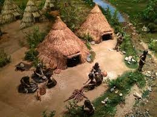

|  | |
|---|---|
| 이름 | 서울 암사동 유적 |
| 소재지 | 서울특별시 강동구 올림픽로 875 (암사동 155) |
| 설명 | 서울에서 가장 오래된, 선사시대의 주거 유적지. 우리나라 선사시대를 대표하는 곳으로 한강 유역 최대의 집단 취략지로 그 가치가 매우 높은 곳이다. 40기 이상의 집자리터와 빗살무늬토기 문화가 발견되는 등 신석기시대 사람들 삶의 흔적이 고스란히 남아있다. 관람객을 위한 교육,문화축제 등 다양한 행사도 제공되고 있다. |
| 대중교통 | 버스 : 340, 3411 지하철 : 8호선 암사역 하차 후 마을버스(02) 환승 |